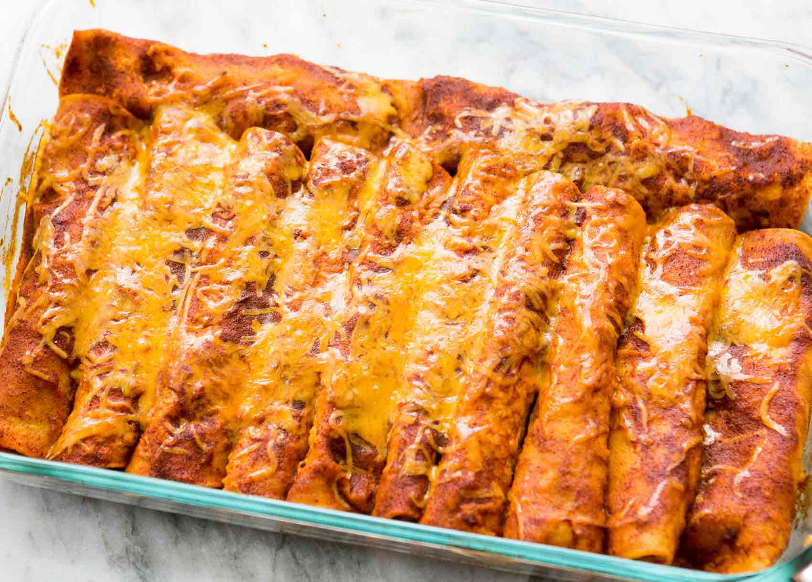

Cheese Enchiladas

Description
Enchiladas are a traditional Mexican dish prepared with tortillas, a meat of your choice, sauce, and cheese.
Common varieties include beef, chicken, and cheese enchiladas with most including a red sauce, though some may be served with queso.
Ingredients
- 2 tbsp oil
- 4 tbsp flour
- 3 tbsp Gebhardt Chili Powder
- 1/2 tsp garlic powder
- 1/4 tsp oregano
- 1/2 tsp salt
- 1/2 tsp cumin
- 2 cups chicken broth
- Corn Tortillas
- Mexican Cheese
Steps
- Add oil to pot and heat on Medium. Pour in flour and whisk together and cook for 1-2 minutes.
- Add chili powder, garlic powder, cumin, salt and oregano and mix until clumpy. Pour in chicken broth, whisking the entire time and until there are no more clumps. Heat for 15 minutes or until thickened.
- After you have made your sauce, you will want to dip your corn tortillas in the sauce until they are soft and immediately put it into a greased 11x7 pan.
- From there you will add cheese (I use the Mexican Blended Cheese), roll it up and push it to the end of the pan.
- Continue doing this with your tortillas until your pan is full. From there you will pour the excess sauce over your tortillas. Sprinkle the top with more cheese. (You can also prepare this in advance and refrigerate until ready to cook).
- Bake at 350 for 20-25 minutes.